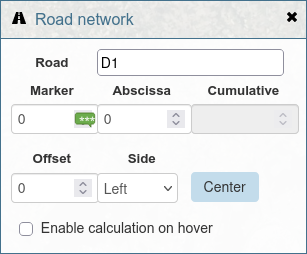
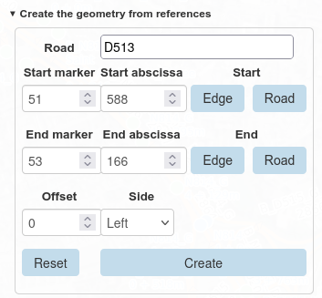

Lizmap Web Client tools#
The road network can be published with Lizmap Web Client (LWC). A JavaScript script, road_network.js, adds tools to the web map so that users can work with linear references (road, marker, abscissa, offset and side) directly in the browser.
These tools rely on Lizmap actions:
each tool calls a named action, which runs the PostgreSQL function lizmap_get_data(json).
This function calls the road_graph functions of the plugin
and returns the result as GeoJSON.
Note
The user interface is written in English and can be translated. This page gives the labels of the French interface, with the English text.
Features#
The script adds four tools:
| Tool | Where | Lizmap actions used |
|---|---|---|
| Road network panel | Mini-dock Graphe routier | get_references_from_point, get_road_point_from_reference |
| Create a geometry from references | Editing form | get_references_from_point, get_road_point_from_reference, get_road_substring_from_references, get_edge_start_or_end_tip_from_references |
| Split a line | Feature popup | split_line_by_point |
| Merge two lines | Feature popup | merge_selected_lines |
Road network panel#
The script adds a mini-dock named Graphe routier (Road network). It opens when the map loads.

The panel contains a form with these fields:
| Label | Meaning |
|---|---|
| Route | Road code, for example D1. The list of values comes from the roads layer. |
| PR | Marker code (in French: point de repère) |
| Abscisse | Abscissa: distance in meters from the marker |
| Cumul | Cumulative distance in meters from the start of the road (read-only) |
| Décalage | Offset: distance in meters from the road axis |
| Côté | Side of the road: Gauche (left) or Droite (right) |
Get the references of a point#
When the panel is open, click on the map. The script runs the action
get_references_from_point with the clicked point. The returned references
fill the form, and the point is displayed on the map.
Show the references when hovering the map#
Check Activer le calcul au survol (Enable calculation on hover).
When the mouse moves over the map, a tooltip displays the references
of the point under the cursor, for example D1 - PR 3 + 250m (2m G).
The values in the form are updated too.
To limit the number of requests to the server:
- the script sends at most one request every 200 ms,
- no request is sent while the user drags the map.
This option is not available while the editing form is open.
Center the map on references#
Type a road, a marker, an abscissa, an offset and a side in the form,
then click Centrer (Center). The script runs the action
get_road_point_from_reference and centers the map on the returned point.
Tip
Click and hover only work at scale 1:50,000 or larger. At a smaller scale, a message asks the user to zoom in.
Create a geometry from references#
When the user opens the Lizmap editing form for a point or line layer, the script adds a collapsible section above the form: Create the geometry from references.

The fields depend on the geometry type of the layer:
- Point layer: road, marker, abscissa, offset and side.
- Line layer: road, start marker and abscissa (PR début, Abscisse début), end marker and abscissa (PR fin, Abscisse fin), offset and side.
If the editing form has a field named road_code, its value is copied
into the Route field.
Buttons#
| Button | Action |
|---|---|
| Create | Computes the geometry from the references and replaces the geometry of the edited feature. For a point layer, the script runs get_road_point_from_reference. For a line layer, it runs get_road_substring_from_references. If the start references are after the end references, the script swaps them. |
| Reset | Deletes the drawn geometry and resets the reference fields. |
| Edge, start row | Sets the start references to the start of the edge located at the start references. |
| Road, start row | Sets the start references to the start of the road. |
| Edge, end row | Sets the end references to the end of the edge located at the end references. |
| Road, end row | Sets the end references to the end of the road. |
The Tronçon and Route buttons are only available for line layers.
They run the action get_edge_start_or_end_tip_from_references.
After that, the line geometry is computed again.
Snap a drawn geometry to the road#
When the user draws or modifies the geometry with the Lizmap drawing tools, the script:
- runs
get_references_from_pointfor the point, or for the first and last vertices of the line, - fills the reference fields with the returned values,
- replaces the drawn geometry with the geometry computed from these references.
As a result, the geometry always follows the road. If the road field has a value, only this road is used to find the references.
If no reference is found after 2 seconds, a message tells the user that the geometry could not be created. The most common cause is a point more than 50 m away from the road.
When the feature is saved, the Graphe routier panel opens again.
Split a line at a point#
This tool adds a button to the popup of the features of a line layer. It splits a line in two features at a point.
The button is only displayed if the user can modify the geometry and create features in this layer, in the Lizmap editing configuration.
- Open the Graphe routier panel and click on the line where it must be split. A red point is displayed on the map.
- In the popup of the line, click the button. Its label is the
titleof thesplit_line_by_pointaction. - Confirm the operation.
The script sends the red point to the action split_line_by_point.
The database function road_graph.split_table_linestring_feature_by_point
splits the line, and the layer is refreshed.
The default popup button of this action is hidden, because it does not send the clicked point.
Merge two lines#
This tool adds a button to the popup of the features of a line layer. It merges two features of the same layer into one feature.
The button is only displayed if the user can modify the geometry and delete features in this layer, in the Lizmap editing configuration.
- In the popup of the first line, click Choose this feature to merge. The button label becomes Feature chosen to merge. To cancel, click this button again.
- Click on the second line on the map. In its popup, click Merge with the chosen feature.
- Confirm the operation.
The script runs the action merge_selected_lines with the IDs of the two features.
The database function road_graph.merge_table_linestring_features merges them
and the layer is refreshed. The popup then shows only the merged feature.
Once a first feature is chosen, the merge button is only displayed for features of the same layer.
Installation#
1. Publish the layers#
In the QGIS project:
- add the
road_graph.edgeslayer. The actions about references use this layer. - add the
road_graph.roadslayer and publish it as WFS (Project properties > QGIS Server > WFS capabilities). The script uses it to fill the list of roads. The layer must have the fieldsid,road_codeandroad_order. - for the split and merge tools, add the line layers that the users can edit.
2. Create the database function#
Create the function public.lizmap_get_data(json) in the database.
The file lizmap_get_data_example.sql
gives a complete example for all the actions.
The function uses the projection EPSG:2154. Change it if your data uses
another projection.
3. Create the actions file#
Create a file named after the QGIS project, with the extension .action.
For example, for road_network.qgs, create road_network.qgs.action
in the same folder.
The file lizmap_action_file_example.json gives a complete example. Update it:
- replace
edges_7df8a321_25e8_4a67_9bf8_796e4782e147with the ID of youredgeslayer, - replace
demo_painting_26eb3c57_3374_41a5_8628_391caa42f33awith the IDs of the line layers for the split and merge tools. Do this inlayersand incallbacks.
The action names must not change, because the script uses them.
| Action | Scope | Options | Returned feature |
|---|---|---|---|
get_references_from_point |
layer |
road_code, vertex_number |
Point with road_code, marker_code, abscissa, cumulative, offset, side, vertex_number |
get_road_point_from_reference |
layer |
road_code, marker_code, abscissa, offset, side |
Point with the references |
get_road_substring_from_references |
layer |
road_code, start_marker_code, start_abscissa, end_marker_code, end_abscissa, offset, side |
Multilinestring with the start and end references |
get_edge_start_or_end_tip_from_references |
layer |
road_code, marker_code, abscissa, start_or_end (start or end), tip_type (edge or road) |
Point with marker_code, abscissa, start_or_end |
split_line_by_point |
feature |
none (the clicked point is sent as WKT) | The clicked point, message and message_detail |
merge_selected_lines |
layer |
feature_id_a, feature_id_b |
message and message_detail, no geometry |
vertex_number tells the script where to put the result:
-1 for the panel, 0 for the start point and 1 for the end point
of the edited geometry.
4. Configure the script#
Open road_network.js and edit the
CONFIGURATION section at the top of the file:
| Constant | Default value | Description |
|---|---|---|
ROAD_MIN_SCALE |
50000 |
Smallest scale denominator for the click and hover tools |
ROAD_ROADS_LAYER_NAME |
roads |
WFS name of the roads layer |
ROAD_EDGES_LAYER_ID |
edges_7df8a321_... |
QGIS ID of the edges layer |
ROAD_ORDER_FIELD |
road_order |
Field used to sort the list of roads |
Do not edit the code below the END CONFIGURATION comment.
5. Add the files to Lizmap#
Follow the Lizmap documentation: Adding your own JavaScript.
- Allow JavaScript for the repository in the Lizmap administration (Allow themes/JavaScript codes for this repository).
- Copy road_network.js,
road_network.css and
road_network.csv into the repository folder:
media/js/<project_name>/to use the tools in one project,media/js/default/to use them in all projects of the repository.
- Reload the map in the browser.
Translate the interface#
The texts of the interface are written in English in the script.
The translations are stored in a CSV file located next to the script.
This file has the same name as the script, with the .csv extension:
road_network.csv for road_network.js.
When the map loads, the script:
- gets the language of the user interface, from the
langattribute of the page or from the browser language, - downloads the CSV file,
- displays the translated texts. A text without a translation is displayed in English.
If the CSV file is not found, the interface is displayed in English.
The first line of the file contains the language codes. The first column contains the English text, exactly as written in the script. Each other column contains the translations for one language:
1 2 3 4 | |
To add a language, add a column with its two-letter code, for example de or es.
Rules for the values:
- enclose a value in double quotes if it contains a comma, a double quote or a new line,
- double the double quotes inside a value:
"", - keep the placeholders in braces, for example
{scale}, and do not translate them. They are replaced by values when the text is displayed. They can be moved in the sentence.
Texts of the actions and of the database#
The same CSV file also translates:
- the
titleandconfirmproperties of the actions, in the.qgs.actionfile. Write them in English, and add them to the CSV file. - the messages returned by the
lizmap_get_datafunction, in themessagefield. Lizmap displays them at the top of the map, and the script replaces them by their translation.
A message can contain a variable part, for example the detail of an error
returned by the database. In this case, the lizmap_get_data function must also return
this variable part in a message_detail field, and the message must end with it:
| Field | Value |
|---|---|
message |
An error occurred while splitting the line: The point is not close enough to the feature (distance 12 > 5m) |
message_detail |
The point is not close enough to the feature (distance 12 > 5m) |
In the CSV file, the variable part is replaced by the {detail} placeholder:
1 | |
The variable part itself is not translated.
If you change a text in the .qgs.action file or in the lizmap_get_data function,
change it in the CSV file too. Otherwise, the text is displayed without translation.
Limitations#
- The script was written for a specific version of Lizmap Web Client. It may not work with another version.
- The tools only support point and line layers.
- The start and end references of a line must be on the same road.
- The split and merge tools are not available for the
edgeslayer.